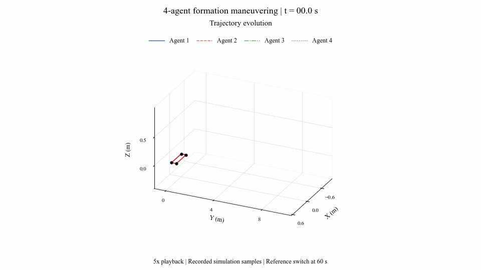
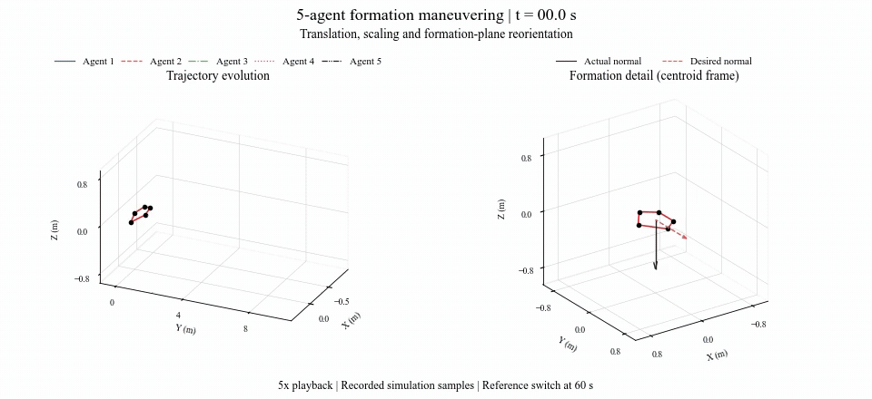
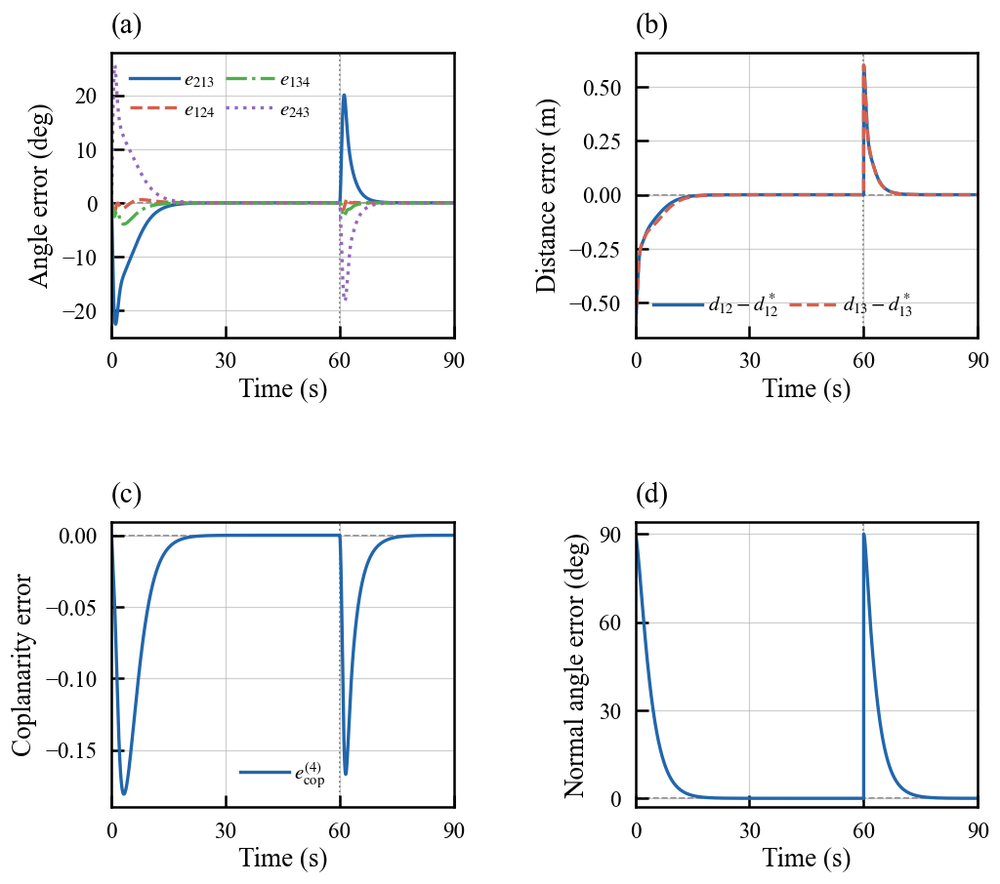
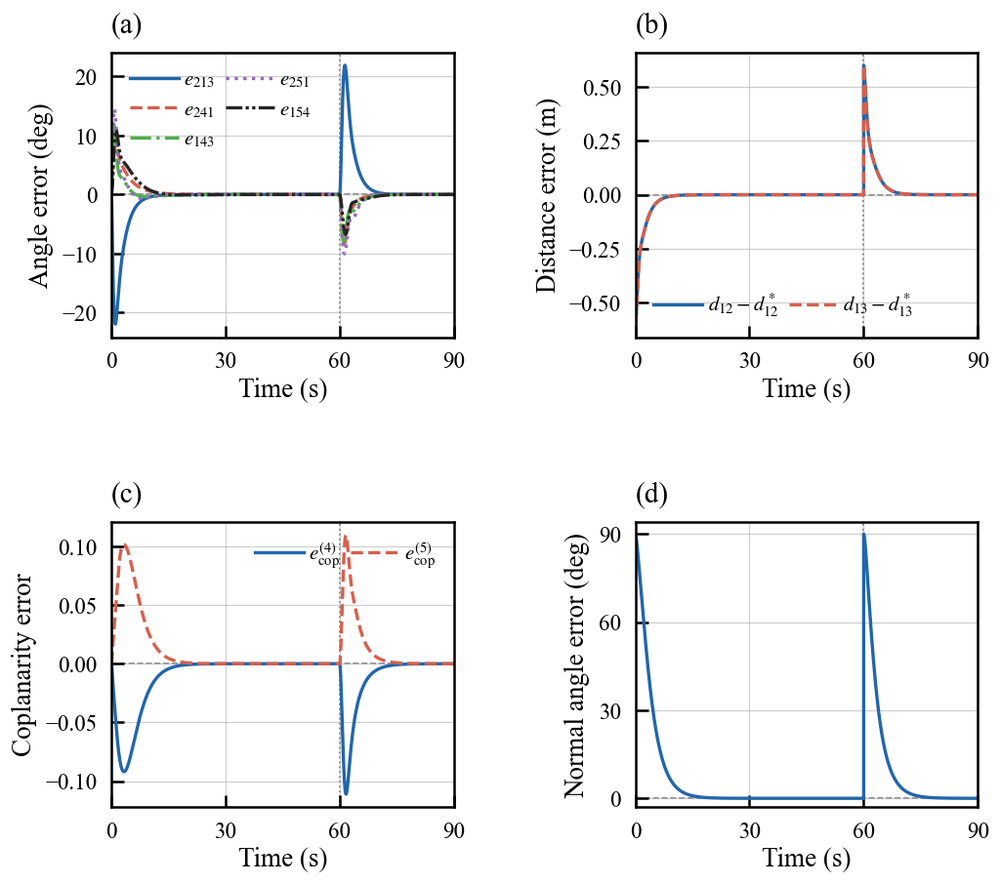
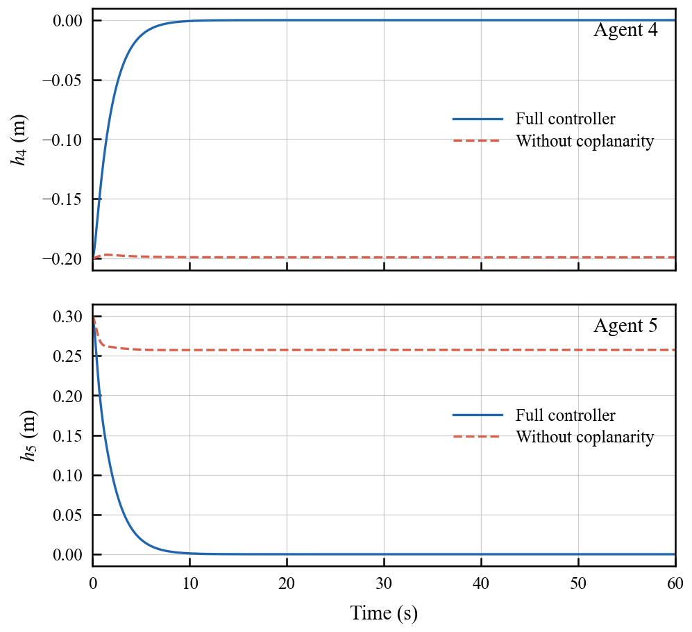
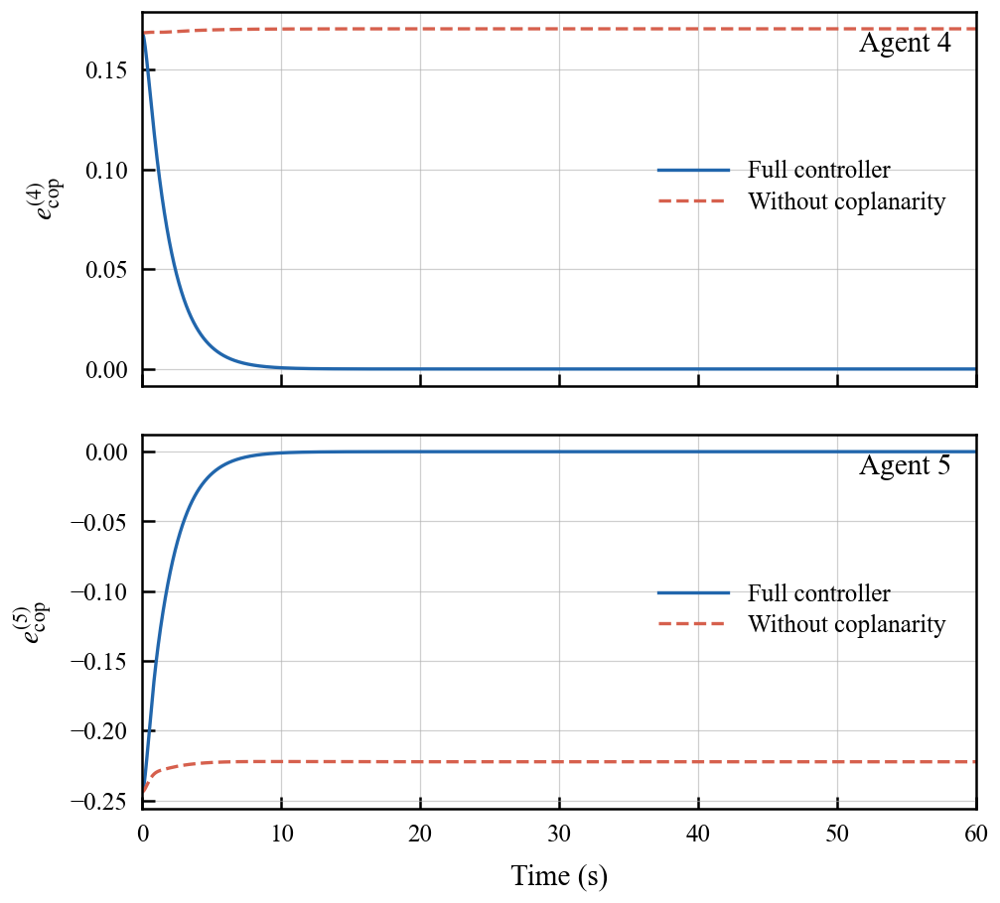
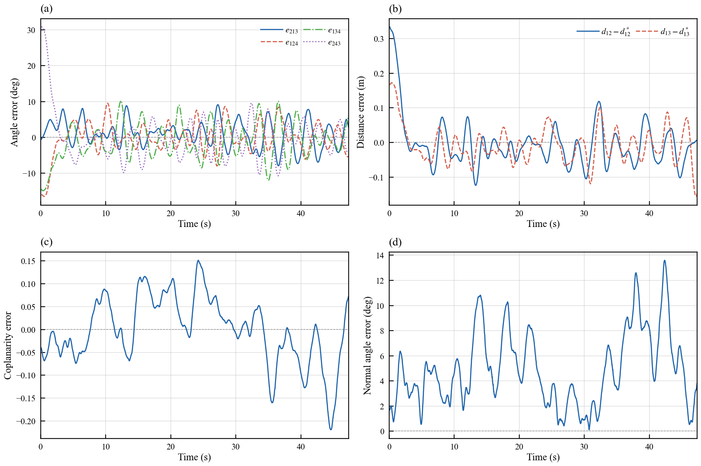
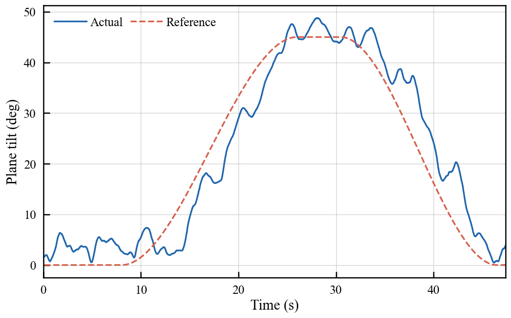

Simulation Results
Four-agent and five-agent formations perform translation, scaling, and plane reorientation under double-integrator dynamics. Each animation covers the complete 90-s simulation at 5× speed, with a reference switch at 60 s.
Four-Agent Square

Five-Agent Pentagon

Formation error curves


Coplanarity Constraint Necessity
The full controller corrects out-of-plane deviations. Residual deviations remain when the coplanarity term is disabled.


Experimental Results
The platform uses PX4-based quadrotors and NOKOV position feedback. Press the play button below to watch each flight in your browser.
Four-UAV Formation
Four-UAV Tracking Results
These curves are from a separate flight with a 1-m square formation, translation, a 45° plane tilt, and a return to a horizontal formation.

